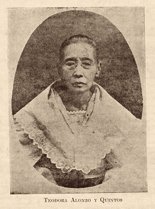
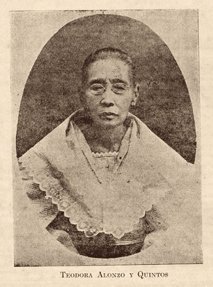

Early Life
Discover the family, childhood,
and education of Dr. José Rizal, the
national hero of the Philippines.
Family
 

José Rizal was born into a well-educated family in Calamba, Laguna. His parents, Francisco Mercado and Teodora Alonso, were known for their intelligence and strong values. The family environment nurtured Rizal's early love for learning and patriotism.
Childhood

Growing up in Calamba, Rizal was exposed to the beauty of nature and the rich culture of the Philippines. His childhood was marked by curiosity and a passion for knowledge, which later shaped his role as a national hero.
Education
Rizal's education began at home and continued at the Ateneo Municipal de Manila, where he excelled in various subjects. His thirst for knowledge led him to study medicine and humanities in Europe, broadening his worldview and commitment to reform.
"The youth is the hope of our future."
A famous quote by José Rizal emphasizing the importance of the younger generation.